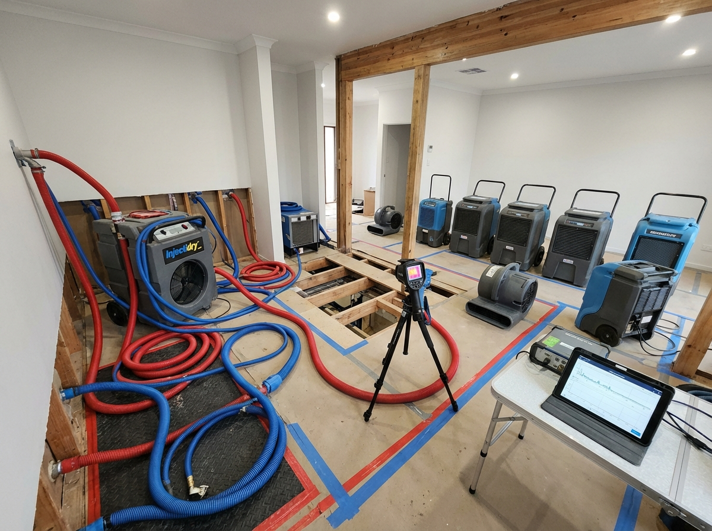
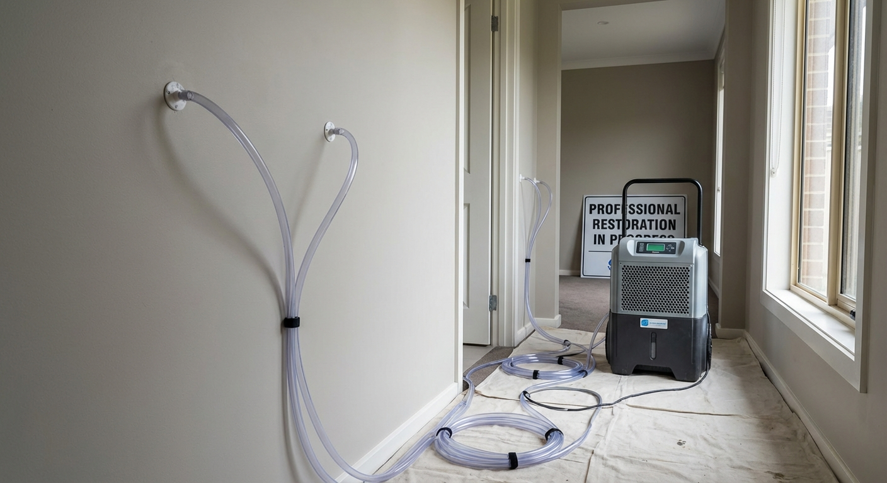

Efficient Resource Allocation & Timeline Management
Master project management and scheduling for restoration projects. Learn resource allocation, critical path methodology, multi-site coordination, and stakeholder communication following Australian construction management standards and industry best practices.
| Phase | Duration | Key Activities | Deliverables | Success Criteria |
|---|---|---|---|---|
| Emergency Response | 0-24 hours | Stabilise, mitigate, assess | Initial report, photos | Site secured, damage contained |
| Assessment & Planning | 1-3 days | Scope, quote, schedule | Detailed scope, timeline | Approval obtained |
| Preparation | 2-5 days | Pack-out, protection, demo | Site ready, inventory | Clear work area |
| Restoration | 5-30 days | Drying, cleaning, repairs | Progress reports | Moisture goals met |
| Reconstruction | 10-60 days | Rebuild, finishing, painting | Stage completions | Building standards met |
| Completion | 1-2 days | Final inspection, handover | Certificate, warranty | Customer sign-off |
Capacity: 8 crews
Current: 6 active (75%)
Available: 2 crews
Avg Rate: $275/hour
Air Movers: 45/60 deployed
Dehumidifiers: 18/25 active
Extractors: 8/10 in use
Utilisation: 78%
Electricians: 4 available
Plumbers: 3 available
Builders: 6 available
Lead Time: 24-48 hrs
Active Jobs: 42
Emergency: 3
Standard: 28
Completion: 11
Duration: 8 hours | Critical
Duration: 4 hours | Critical
Duration: 72 hours | Critical
Duration: 2 hours | Critical
Duration: 40 hours | Float: 8 hours
Total Critical Path: 10 days | Float Available: 8 hours on non-critical tasks
| Risk Category | Probability | Impact | Mitigation Strategy | Contingency |
|---|---|---|---|---|
| Weather Delays | High (60%) | Medium | Monitor forecasts, protective covering | +2 days buffer |
| Material Shortage | Medium (30%) | High | Multiple suppliers, early ordering | Alternative materials |
| Scope Creep | High (70%) | Medium | Clear documentation, change orders | 15% budget reserve |
| Equipment Failure | Low (15%) | High | Preventive maintenance, backup units | Rental agreements |
| Staff Illness | Medium (40%) | Medium | Cross-training, casual pool | Subcontractor list |
| Hidden Damage | High (50%) | High | Thorough inspection, thermal imaging | Variation process |